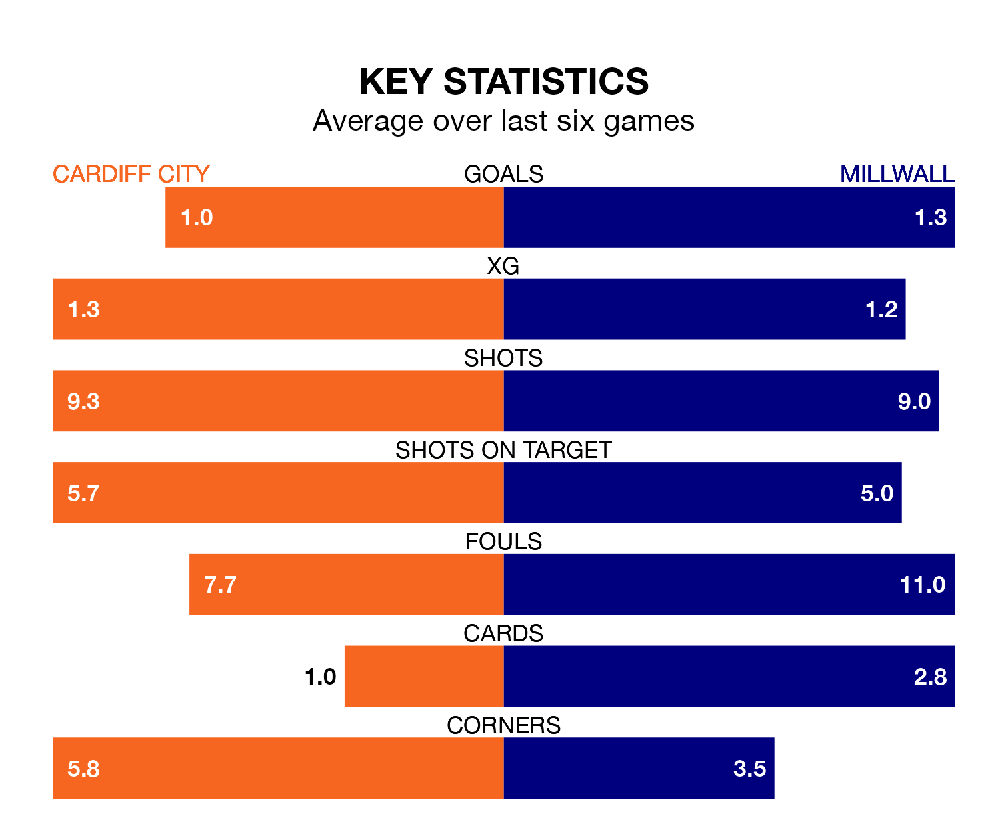

Cardiff City host Millwall on Saturday at the Cardiff City Stadium in the Championship.
In their last league match, on December 2, Cardiff lost to Southampton 2-0 away.
Millwall drew, 1-1 at home against Sunderland, with Kevin Nisbet scoring their goals.
In Jak Alnwick, Cardiff can rely on one of the league's safest pair of hands. He has kept six clean sheets in his 15 appearances this season, and only one other 'keeper – West Bromwich Albion's Alex Palmer – has been able to prevent the opposition scoring on more occasions in the Championship.
In Millwall's net, Bartosz Bialkowski has four clean sheets in 14 games. He has conceded a goal every 66 minutes, 60% more often than the 104 minutes between goals for Alnwick.
In the last 10 years, Cardiff and Millwall have played each other on 12 occasions. Cardiff won one of them, Millwall four, and they drew seven times.
On average, the Bluebirds scored 0.8 goals and the Lions 1.1 in those matches.
Their last meeting was on January 21, when Millwall won 1-0 away.
The Lions are 19th in the table after 19 games, of which they have won five and drawn six, earning 21 points.
City are eight places ahead of the visitors in 11th, with eight wins and three draws putting them on 27 points.
The Bluebirds are in mixed form in the Championship, with two wins and a draw from their last six games.
With a win and two draws over that period, Millwall's form is slightly worse – they have taken five points from 18, compared to the home team's seven.
With 21 goals in 19 games so far this season, Millwall are scoring at below the league average rate with 1.1 goals per game. And they are conceding at an average rate, letting in 26 goals at a rate of 1.4 per game.
Cardiff, meanwhile, are average scorers, with 1.4 goals per game. They have conceded 1.2 goals per game.
